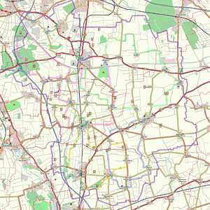

Freizeitkarte Börde - Übersicht (Kartographie: OpenStreetMap)
Im Rahmen der Umsetzung ihres „Integrierten ländliches Entwicklungskonzepts“ (ILEK) haben die Gemeinden Algermissen, Harsum und Hohenhameln sowie die Stadt Sehnde eine gemeinsame Freizeitkarte erstellt. Ein Schwerpunkt der Karte liegt im Bereich des Radfahrens: Vier Erlebnisrouten sollen es allen Bewohnern und Gästen der Region ermöglichen, die Landschaft und das vielfältige Freizeitangebot der Region besser kennen zu lernen. Alle Routen führen – soweit möglich abseits der Straßen – durch die hügelige Bördelandschaft entlang an Feldern, idyllischen Ortslagen, Kanälen und kleineren Fließgewässern.
Dazu sind in der Karte auch alle Freizeitangebote dargestellt: Paltrockmühle in Asel, Rittergut in
Eqourd, Naturlehrpfad nördlich von Algermissen oder auch das Straßenbahnmuseum in Wehmingen – dies sind nur einige der zahlreichen Möglichkeiten schöne, interessante und sportliche Stunden in der Börderegion zu verbringen.
Die Freizeitkarte verbindet: Gemeindegrenzen gibt es in der Karte nicht – dafür umso mehr Vorschläge für landschaftlich schöne und sichere Radwege zwischen den zahlreichen Ortschaften in der Börderegion. Sportliche Angebote, Gaststätten, Rastplätze entlang der Fahrradrouten und Hinweise auf alle kulturellen und baulichen Besonderheiten der Region machen jeden Ausflug zu einem Erlebnis.
Die Bürgermeister der Börderegion freuen sich nunmehr, dass die Karte fertig gestellt ist und haben sich bereits gemeinsam in den Sattel geschwungen und sich auf eine Probefahrt entlang der Erlebnisrouten begeben. 1
| Erhältlich ist die Freizeitkarte in den Rathäusern der Gemeinden Algermissen, Harsum und Hohenhameln und der Stadt Sehnde. Die völlig aktualisierte Neuauflage 2011 liegt dort seit April 2011 kostenlos aus (Kartographie: LGN - Landesvermessung + Geobasisinformation Niedersachsen). |
-
Die nebenstehende Karte (Kartographie OpenStreetMap) als PDF-Datei zum Ausdrucken: Freizeitkarte-1.pdf (6 Seiten DIN A4 mit Schnitt- und Montagelinien. Die einzelnen Seiten haben entsprechende Überlappungen und können daher sehr einfach zusammenmontiert werden).
-
Eine vergrößerte Ansicht erhalten Sie, wenn Sie auf den nebenstehenden Kartenausschnitt klicken. 2
- 1vollständiger Text siehe
![[WWW]](sycamore-www.png) www.ilek-boederegion.de
www.ilek-boederegion.de - 2Sie können alle Kartenausschnitte und viele Fotos in diesem Wiki durch Anklicken vergrößern.

{kind=link}